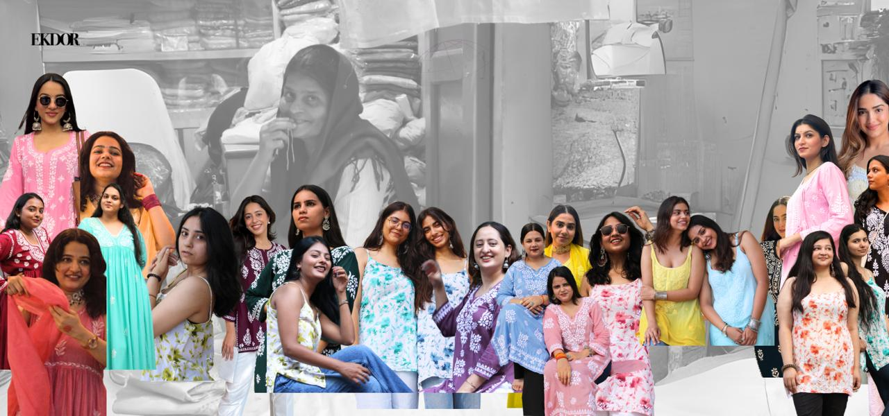
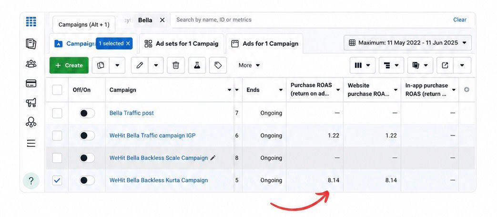

D2C Brand · 2020–2024

"A Chikankari brand, built thread to checkout."

"A Chikankari brand, built thread to checkout."
01 — Brand
I founded EKDOR, a vertically integrated D2C women's apparel brand in the niche craft category of Chikankari. From the start I owned the whole chain — product, pricing, supply chain, logistics, growth and brand — and built the business to ₹1Cr+ in revenue at 65% gross margins through disciplined pricing and inventory control.
EKDOR grew into a genuinely repeat-led business: I acquired 5,000+ paying customers organically at an average order value of ~₹1,650, with around 80% of revenue from organic channels and 45% from returning customers. Sixty percent of revenue concentrated in five hero SKUs — a sign of a focused, well-understood range rather than a sprawling catalogue.
Behind the brand was a real operation. I managed an unorganised, multi-vendor supply chain — balancing four vendors with 25–45 day lead-time variability — and designed a hybrid logistics setup across 3PL, local couriers and in-house runners, delivering in 1–2 days across Delhi/NCR and 3–4 days pan-India at roughly 7–8% logistics cost. In a 65% COD business, I cut COD risk through IVR and WhatsApp verification, holding returns to ~21%. I also built and retained a cross-functional team of eight.


A brand built on the simple motto of — "Wear what you love"
The belief behind every EKDOR campaign02 — Campaigns

My most documented brand creative is Sakhi — a campaign shot with real women, not models, in Old Delhi. Choosing real women and a culturally loaded location was deliberate: it signalled that chikankari belongs to real women, real lives and real spaces. The campaign prioritised emotional resonance and cultural authenticity over aspirational distance, and it reflected how I think about brand — building it through storytelling rather than product-forward advertising.
That same belief carried through to how EKDOR spoke to its community. Our Women's Day creative celebrated the customers and, just as importantly, the artisans who bring the chikankari to life — the partnership at the heart of the brand. In a low-trust apparel category, this storytelling-led approach is what built genuine resonance and trust.
03 — Analytics
I ran EKDOR as a numbers-led business. Working in Shopify, I tracked sales over time, channel mix and customer behaviour closely, and used that visibility to make decisions on pricing, inventory and growth.
The discipline showed up in the fundamentals: 65% gross margins held through deliberate pricing, working capital protected by actively intervening on slow-moving inventory with content and tactical pricing, and dead stock minimised to 21% of total inventory. Cohort and channel analysis kept the focus on what actually drove a durable business — repeat purchase and organic acquisition — rather than vanity revenue.

04 — Performance Marketing
Instagram · Organic Reels
Top 3 performing reels · zero paid amplification
2.57M+
Total organic views

I grew EKDOR's audience into an 85K+ Instagram-led community — the engine of brand resonance in a category where trust is hard to earn. Strong organic reel performance drove discovery, while a consistent paid strategy amplified what was already working.